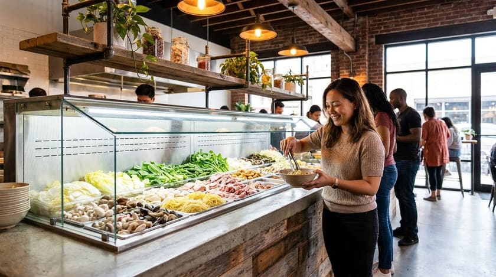

Broths
- Mala · numbing
- Tomato · sweet-sour
- Clear · house stock
- Extra chilli oil
Wangsa Maju · Kuala Lumpur
Malatang the way it should be — you choose every skewer, noodle and green from the chiller, we weigh it, then cook it to order in a broth you pick.
How it works
Walk the chiller and take what you want: beef slices, fish tofu, quail eggs, enoki, lotus root, greens, and a wall of noodles.
Pay by weight, so a light lunch stays light on the wallet. Most people land somewhere between RM 1 and RM 40.
Clear soup, tomato, or the numbing mala broth. Say the word and we dial the chilli up or down for you.

Interactive dining
You are the chef. Take the tongs, build the bowl you actually want, then tell us how hard to push the mala. Nothing is pre-portioned and nothing is fixed.
Five levels, from a clear bone broth through to the full numbing Sichuan mala.
Reviews
“A good halal Chinese spot I've found in KL. The Malatang is very nice with plenty of fresh ingredients to choose from. The beef stir-fried noodles are also very tasty and full of flavour. Prices are quite affordable. Definitely recommended. Will come back again!”
Reviews are quoted from the restaurant's public Google listing. Read all 125 reviews.
Visit
Plus code 5PVQ+64 Taman Sri Rampai
Get directions